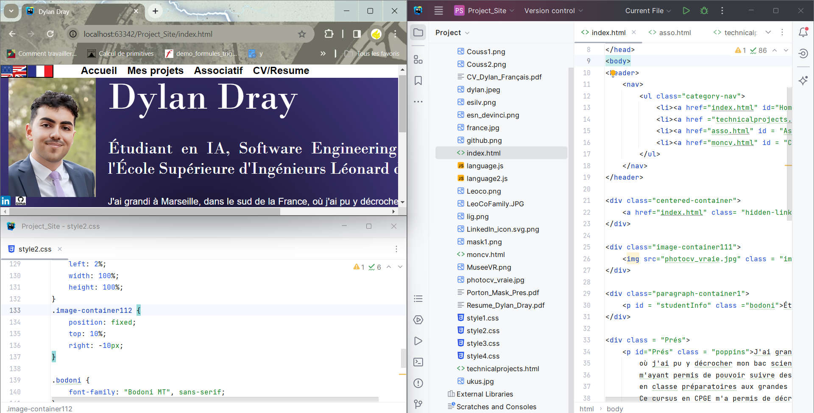
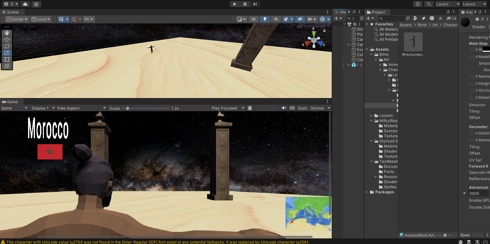
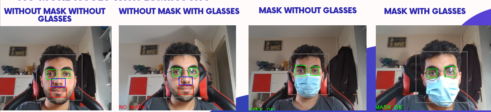

Mon site
Le développement web m'a toujours rendu curieux, j'ai donc décidé de créer mon propre site internet afin de pouvoir apprendre le HTML, le CSS ainsi que le Javascript. J'ai fait le choix de ne pas travailler avec un Framework afin d'avoir totalement la main sur ce que je faisais de A à Z, même si ça s'accompagnait de son lot d'embûches. J'ai pour projet de faire une nouvelle section "Blog" qui servira à réaliser ma propre veille technologique, tout au long de mes études
_____________________________________________________________________Musée VR Méditerranée
[PROJET EN COURS] Ce projet est réalisé dans le cadre de ma seconde année en école d'ingénieurs. Il consiste en la réalisation d'un musée à monde ouvert entourant la méditerranée au fil des époques. Ce projet est en collaboration avec 4 autres étudiants. Je m'occupe, à titre personnel, de l'élaboration du Gameplay, du scénario, de l'User Interface (UI) et de tout ce qui touche au code C#, sur le moteur de jeu Unity. Cette section sera complétée au fur et à mesure de mon avancement.
Port'On Mask
Cliquez ici pour télécharger la présentation du projet
V1: Détection du port du masque & ouverture de porte
La première version du Port'On Mask a été réalisé dans le cadre de mon projet de classe prépa, durant la pandémie du COVID-19. répondant au thème de "Santé et Prévention". Le principe de base de cette première version était simple: disposer une caméra devant des établissements de santé, qui à l'époque, manquant de personnel, se retrouvaient dans l'obligation de mettre des soignants à l'entrée des bâtiments ou des services hospitaliers, afin de vérifier le port correct du masque par les visiteurs. Le Port'On Mask V1 analysait donc de manière automatique un flux vidéo, afin de déterminer si une personne portait correctement son masque chirurgical, et ouvrait la porte si c'était le cas. Pour ce faire, j'ai utilisé le module OpenCV en Python, qui m'a permis de détecter les éléments essentiels à la détection du port du masque (nez et bouche) dans un visage. Afin d'optimiser la recherche, j'ai normalisé l'intensité des images et ajouté un filtre temporel (moyenne mobile). Les résultats furent probant, le programme reconnaissait le port du masque (ou du moins, dans cette version, l'absence de nez et de bouche) et ouvrait la maquette d'une porte de manière automatique, à l'aide d'un raspberry Pi et de sa Picaméra.
V2: Reconnaissance d'identité, base de données et améliorations
La seconde version du Port'On Mask a été réalisé en 2023, dans le cadre de ma première année d'étude en école d'ingénieurs. Une expérience personnelle que j'ai vécu dans un centre de santé m'a encouragé à reprendre ce projet et à l'améliorer.
En effet, lors d'une visite dans un centre de visite j'ai pu observer une mauvaise
gestion des flux, une secrétaire débordée et des patients perdus.
J'ai décidé d'intégrer un système de reconnaissance faciale masquée, reliant l'identité d'une personne masquée à son profil enregistré dans une base de données, tout en lui fournissant des indications précises sur le lieu du rendez-vous dans le bâtiment, le nom du médecin et l'heure.
Dans un premier temps, j'ai amélioré la détection en identifiant la couleur et la forme du masque. Une fois cette détection accomplie, il est maintenant nécessaire de la faire correspondre à une identité. Dans la pratique, si c'est la première fois que la personne se rend dans le centre de santé, elle devra se rendre à l'accueil où elle fournira son identité, et la secrétaire se chargera de l'associer au visage de la personne dans la base de données. À partir de la deuxième visite, la personne est enregistrée. Dès lors, lorsqu'elle passera devant la caméra à l'entrée, le système la reconnaîtra, ouvrira la porte et affichera sur un écran l'emplacement de son rendez-vous, ainsi que les informations préalablement remplies lors de la prise de rendez-vous.
Du point de vue technique, j'ai constitué une base de données de visages accessibles sur internet. J'ai ensuite ajouté un masque à ces visages à l'aide d'une intelligence artificielle. Dans un second temps, en utilisant mon modèle Haarcascade, j'ai conservé les images où un visage était clairement visible et détectable. Ensuite, j'ai appliqué le modèle dlib pour reconnaître la position des yeux et des sourcils, ce qui m'a permis de nettoyer la base de données des photos de mauvaise qualité, inclinées, etc.
Ainsi, pour le moment, des mesures caractéristiques sont extraites des images restantes pour déterminer l'identité d'une personne.
Les mesures caractéristiques ne suffisant pas à identifier une personne portant un masque, j'ai réfléchi à plusieurs idées pour améliorer cette reconnaissance.
Je vous invite à télécharger le PDF pour obtenir plus d'informations sur les hypothèses et les conditions d'utilisation que j'ai retenues pour mon système.
SmartDream Pillow
SmartDream Pillow est un projet développé durant ma première année d'école d'ingénieurs, dans le cadre d'un Projet Innovant à Impact Positif (PIIP). L'objectif était de simuler la création d'une startup accompagnée d'un produit innovant. Pour pallier aux problèmes de réveil, j'ai proposé l'idée d'un oreiller connecté à mon groupe de travail, sur laquelle nous avons travaillé tout au long de l'année. Il s'agit d'un oreiller connecté qui réveille l'utilisateur au moment optimal pour lui garantir un réveil en douceur. De plus, de nombreux capteurs sont intégrés à l'oreiller pour collecter diverses données utiles pour la santé, telles que le taux d'oxygène et le pouls. Nous n'avons pas réussi à concevoir un oreiller confortable intégrant les capteurs, mais nous avons réalisé une maquette. J'ai principalement occupé les rôles de développeur en C++ et de Scrum Master en utilisant Jira. J'ai donc pu travailler sur du Deep Learning, à l'aide de Tensorflow for Arduino.